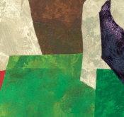

|
| ISSUE #5 |
|
Alan Wood Alan Wood's recent series, "The Bishop's Garden," furthers his longstanding bond with nature and the art of collage. Wood, widely known for his big-picture landscape subjects (rivers, forests, ravines, prairies, islands, ocean fronts), focuses in this series on the comparatively stable and scaled-down environment of the Bishop family's garden at their home in Vancouver. While it is tempting to refer to Alan Wood as a landscape artist, he has in his history of work with this subject created an artistic idiom distinctly his own. Sanctuary Today an arctic front pierces Vancouver's winter gloom. Grabbing my binoculars, I jump in the car, heading south against lanes of lemming traffic, towards the Strait of Georgia. I tunnel under the Fraser River and into the lowlands of Delta, past the condos now sprouting Chung Chuck's old potato field. The car rattles across the one-lane creaky bridge to Westham Island. Pointe aux Chenes, LA-Post BP At the base of the world's largest river delta, between Mississippi and the Atchafalaya, an endangered ridge known as Pointe aux Chenes stretches south out into the coastal wetlands of southeast Louisiana. Pointe aux Chenes is French for "point of the oaks"; but in lower Pointe aux Chenes, the oaks are dying. Zoom Lens "The spare key...." Interview with Robert Arthur Alexie James looked to the west and saw the same mountains his mom and dad had awakened to every morning for the twelve years they were married. This was where his dad had shot the moose they tanned and made into a gun case that now rested on the side of the boat. This was where he had been conceived, born, and raised for the first six years of his life. You Deserve to Hate Everything Lissa eyes a calendar in a glass tower as a wind pushes a wall of cloud up the mountains on the north shore. Waves clip at the edge of the inlet and she pinches the skin between her eyelids. The pencil marks on the calendar blur. She manages to squint the court dates into focus, but the lines that keep the days apart go missing.
Poetry in Issue #5 by:
|
Lake publishes fiction, poetry, critical essays, interviews, reviews and visual arts related to the environment.
|
Lake - Journal of Arts and Environment
Faculty of Creative and Critical Studies at the University of British Columbia Okanagan |
| web design by Idea Bureau |